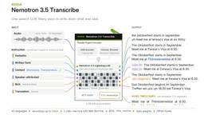
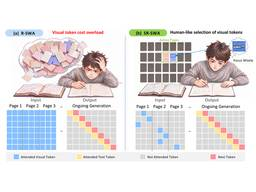
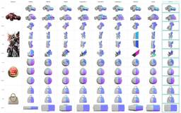

直近1週間の人気フィード
はてなブックマーク数を元に新着優先で並べ替え

NVIDIA、40言語対応の無償文字起こしAI「Nemotron 3.5 Transcribe」 56 PC Watch
56 PC Watch
NVIDIAは10月28日、文字起こしや翻訳、話者分離をサポートしたオープンウェイト(モデルの重み)のAIモデル「Nemotron 3.5 Transcribe」を発表した。文字起こしは40言語、英語との相互翻訳は31言語、話者分離は13言語に対応し、最大1時間の音声を処理できる。ベースモデルはHugging Faceにて公開しており、FP8、NVFP4の量子化モデルも近日公開予定だとしている。ライセンスは「OpenMDW-1.1」で、無償で商用利用も可能。
1日前
終わり近づくWindows 10搭載PC、UbuntuとChromeOSでまだ戦えるかも！ 20 PC Watch
2025年10月にWindows 10のサポートが終了した。しかしMicrosoftは、条件付きでWindows Updateによるセキュリティアップデートを継続できる「Extended Security Updates」(ESU)を提供しており、ひとまず2027年10月まではWindows 10搭載PCを利用できる。
2日前
ChatGPT Pro全プランとBusiness Premiumの利用上限が2倍に 16 PC Watch
ヘビーユーザーにはうれしい知らせだ。OpenAIでCodexを率いるTibo(Thibault Sottiaux)氏は10月29日(米国時間)、ChatGPTの有料プラン「Pro 100」、「Pro 200」、「Pro 500」と「Business Premium」の利用上限を2倍に引き上げたことを、自身のX(旧Twitter)アカウントで発表した。
2日前

Baidu、数百ページの長文も高速OCRできる「Unlimited OCR 2」公開 14 PC Watch
Baidu(百度)は10月27日、長文ドキュメント解析向けAIモデル「Unlimited OCR 2」をオープンウェイトで公開した。コードやモデルのウェイト(重み)はGitHubやHugging Face、ModelScopeで無償公開しており、ライセンスはMITライセンス。
2日前

高精細な3D形状を生成するAIモデル「Hi3D V1.0」、重みを公開 12 PC Watch
2Dの絵と粗いメッシュデータから3Dモデルを生成するAIを、ローカルのGPU環境で動かせるようになる。OCEANO HK HOLDINGは10月23日、AIで3D形状を生成するモデル「Hi3D V1.0」のオープンウェイト(モデルの重み)と推論コードを公開した。Hugging FaceとGitHubから入手できる。ライセンスは独自の「Hi3D Open License Agreement Version 1.0」。
2日前
頭まるごと透明な魚「デメニギス」。初の4K動画が撮影される 4 ギズモード・ジャパン
頭が透明で目が上を向く珍しい深海魚デメニギスの4K撮影に初めて成功しました。緑色の目の仕組みや実際の姿を捉えた貴重な映像と生態について詳しく解説します。
11時間前
2026年最新！ANAアメックスゴールド紹介入会キャンペーン15万マイル｜おすすめANAカード 3 AMEXとANAマイル
ついに！ANAアメックスカードがリニューアルしました！ 2026年9月最新の超特大「特別キャンペーン」が開催中です！ 正直これまでの入会特典が獲得できるチャンスはこの先無いかもしれません。 5年間は旅行代金が無料になるっ ...
16時間前
GeminiがPDFもスライドも「その場で直せる」とアピール。部分選択の指示もOK 3 PC Watch
Google Gemini上で生成したドキュメントやPDF、プレゼンテーション、スプレッドシートを、チャット内で直接編集したりプレビューしたりできる。Gemini公式X(旧Twitter)が10月30日の投稿で案内したもので、Geminiがサポートする全言語において、すべてのユーザーが利用できる。なお、これらのファイルをチャット内で生成する機能自体は、4月29日(米国時間)に全ユーザー向けの提供が発表済み。
2日前